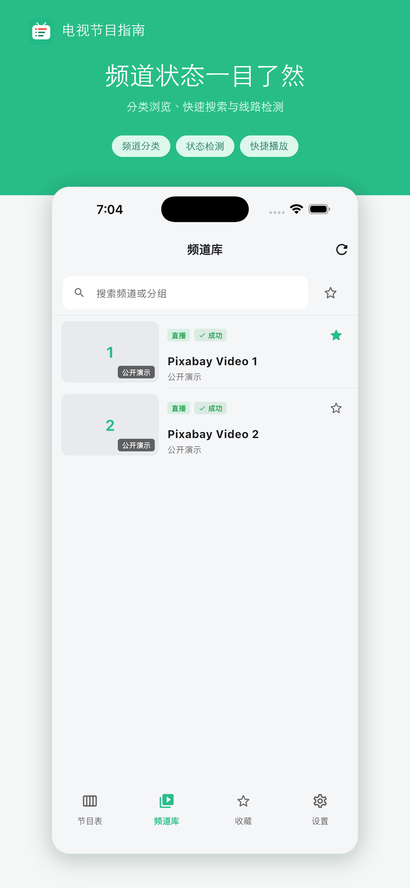
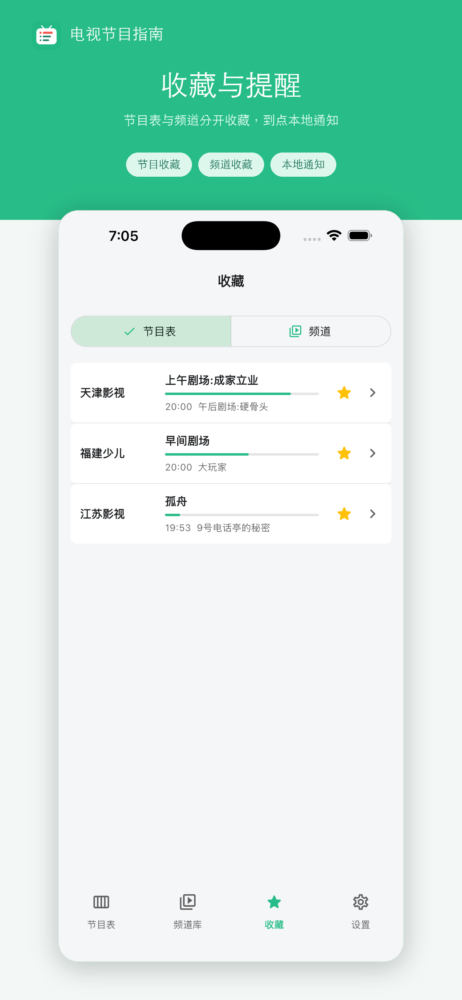
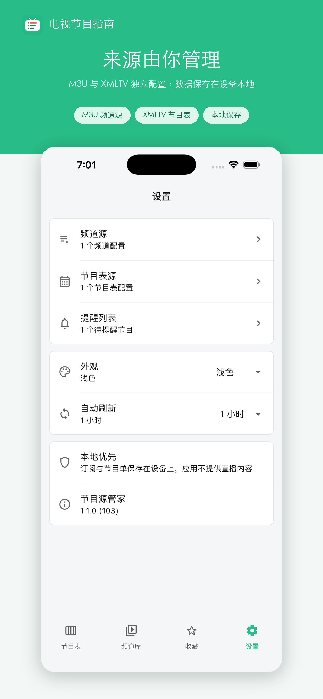

多节目源管理
分别添加、选择、刷新或删除不同的 XMLTV 来源。
节目指南
以频道为线索展示当前节目、播出进度和下一档内容。搜索电视台或节目名称，快速找到想看的内容。
按频道名或节目名实时筛选。
查看开始时间、结束时间、分类与详情。
为未来节目设置本地通知。
所需功能
分别添加、选择、刷新或删除不同的 XMLTV 来源。
把经常查看的频道放进收藏，少一步搜索。
选择开播时提醒，或在节目开始前提前通知。
跟随系统，或按自己的阅读习惯选择显示模式。
导入方式
应用不预置任何频道。导入你有权使用的 XMLTV 后，即可在设备上查看。
添加网络地址，或从“文件”中选取本地节目表。
支持 XML、XMLTV 和 GZ 压缩格式。
搜索、收藏并为未来节目设置提醒。
实际界面
所有截图均来自真实应用界面。



本地优先
节目表来源、收藏、主题和提醒保存在设备本地。无需注册账户，不使用广告、分析 SDK 或用户追踪服务。
查看完整隐私政策使用帮助
还有问题？可以直接通过邮件联系我们。
打开“设置 > 节目表源”，可添加 XMLTV 网络地址，也可从系统“文件”中选择 XML、XMLTV 或 GZ 文件。
不可以。本应用只管理和显示节目日程，不提供、聚合或播放频道与直播内容。
请在 iOS“设置 > 通知 > 电视节目指南”中允许通知，并确认节目尚未开始。
请确认地址指向有效的 XMLTV 或 GZ 文件，并确认内容提供方允许访问。